异常控制流¶
在计算机的运行过程中，程序计数器依次指向一系列的值：\(a_0, a_1, ..., a_n\)。其中，\(a_k\) 是其对应指令 \(I_k\) 的地址。从 \(a_k\) 到 \(a_{k+1}\) 的转换被称为控制转移（Control Transfer），一系列的控制转移则被称为处理器的控制流（Control Flow）。
最简单的控制流便是程序中的指令按顺序执行，即 \(I_k\) 与 \(I_{k+1}\) 在内存中相邻。不过，这种“平滑”的控制流通常因指令的跳转、调用和返回而突然改变，此时 \(I_k\) 便不再与 \(I_{k+1}\) 相邻。
程序内部的状态是由程序变量表示的，控制流使得程序可以对其更新做出反应。但系统还必须能够应对自身状态的变化，它们无法被内部程序变量捕获，甚至不一定与程序的执行有关。比如，数据包在到达网络适配器后需要被存储到内存中；程序请求磁盘中的数据时需要得知其何时可用；父进程必须在其子进程终止时收到通知等。
现代系统通过异常控制流（Exceptional Control Flow，ECF）来处理上述情况，它应用于计算机系统的所有级别中。
异常¶
异常（Exception）是为了响应处理器状态改变而在控制流中突然发生的变化，其基本思想如下图所示：
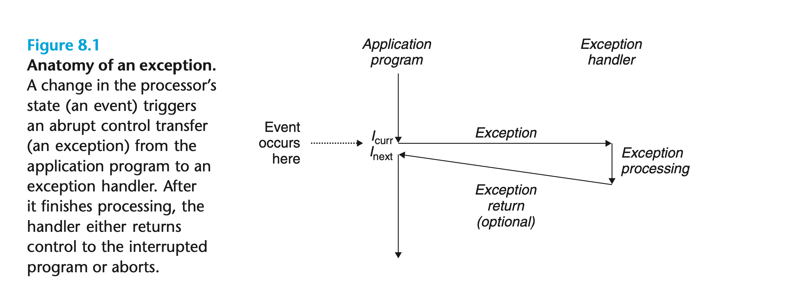 处理器状态的变化被称为事件（Event），它可能与当前指令（\(I_{curr}\)）的执行直接相关，比如算术溢出或除数为零；也可能与当前指令的执行无关，比如系统计时器关闭或 I/O 请求完成。
异常处理¶
异常处理涉及到软件和硬件的密切合作，因此很容易将不同组件执行的工作相混淆。系统中每种可能的异常都对应了一个唯一的非负整数，即异常数字（Exception Number）。当计算机系统启动时，操作系统会初始化一个跳转表，也称异常表（Exception Table）。异常数字是异常表的索引，其中的每个条目 k 均包含了异常 k 的处理程序地址：
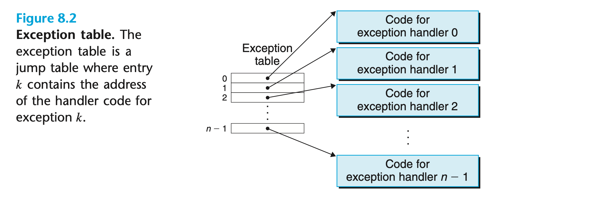 当处理器检测到事件的发生时，首先将确定异常数字，然后根据异常表调用对应的异常处理程序。
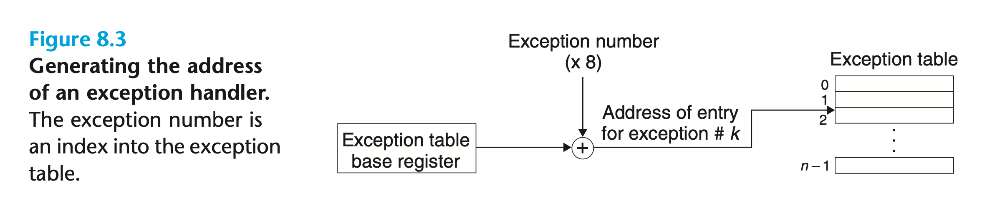 异常与过程调用类似，但也有一些重要区别：
- 异常的返回地址要么是当前指令（\(I_{curr}\)），要么是下一条指令（\(I_{next}\)）；
- 处理器还会将一些额外的处理器状态信息压入栈中。当处理程序返回后，这些信息是重启被中断程序所必需的；
- 异常处理程序在内核态运行，因此可以访问所有系统资源。
异常的分类¶
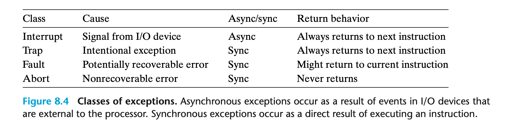
中断¶
中断（Interrupt）异步发生，因为它是由处理器外部的 I/O 设备发出的信号产生的。
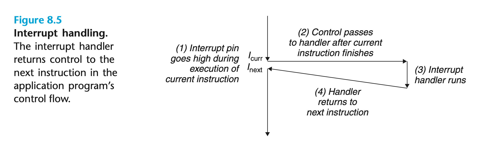 当前指令执行完毕后，处理器注意到中断引脚变高，于是从系统总线读取异常数字，然后调用对应的中断处理程序。当处理程序返回时，它将控制权返回给下一条指令。随后程序继续执行，就好像中断从未发生过一样。
其余几种异常作为当前指令的执行结果同步发生，我们称之为故障指令（Faulting Instruction）。
陷阱和系统调用¶
与中断处理程序一样，陷阱（Trap）处理程序也将控制返回给下一条指令。其最重要的用途是在用户程序和内核之间提供接口，即系统调用（System Call）。
用户程序通过系统调用向内核请求服务，如读取文件（read）、创建新进程（fork）、加载新程序（execve）和终止当前进程（exit）等。
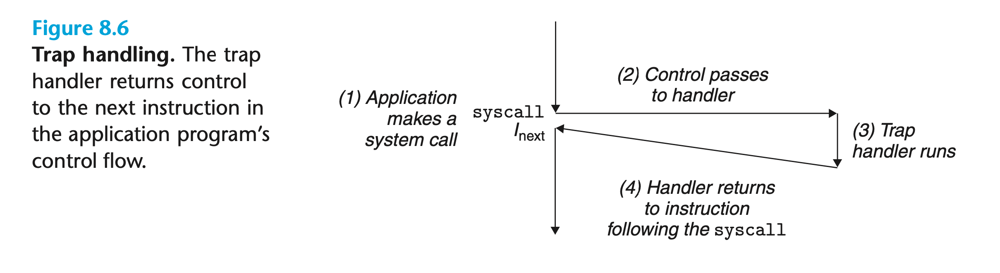
在程序员看来，系统调用和常规函数没有什么区别。但常规函数运行在用户态，因此其可执行的指令类型受限，也只能访问用户栈。而系统调用运行在内核态，能够执行特权指令并访问内核栈。
故障¶
故障（Faulting）是由一些错误状况引起的异常，而这些错误情况有可能被处理程序修正，否则将返回到内核中的中止例程（图中的“abort”）：
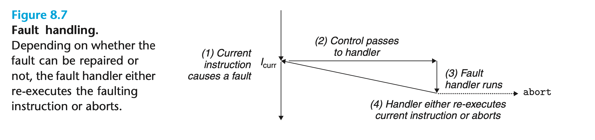
中止¶
与故障相比，引发中止（Abort）的错误状况无法挽救。通常是硬件出现问题，如 RAM 位损坏引起的奇偶校验错误。中止处理程序永远不会将控制权返回给应用程序：
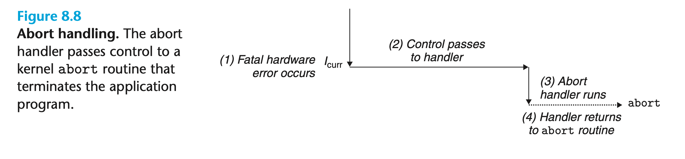
Linux/x86-64 系统中的异常¶
| Exception Number | Description | Exception Class |
|---|---|---|
| 0 | Divide Error | Fault |
| 13 | General Protection Fault | Fault |
| 14 | Page Fault | Fault |
| 18 | Machine Check | Abort |
| 32-255 | OS-defined Exception | Interrupt or Trap |
故障和中止¶
- 除法故障（Divide Error）：当应用程序尝试除以 0 或除法指令的结果对目标操作数来说太大时，就会发生除法故障。Unix 不会试图纠正除法故障，而是直接中止程序；
- 一般保护故障（General Protection Fault）：一般保护故障出现的原因有很多，通常是程序引用了未定义的虚拟内存区域，或试图向只读文本段写入。Linux 不会试图纠正该故障，而 Shell 一般将其报告为分段故障（Segmentation Faults）；
- 缺页故障（Page Fault）：程序引用不在内存而在磁盘上的虚拟页面会导致缺页故障。处理程序将磁盘上合适的虚拟内存页面映射到物理内存页面，然后重新执行故障指令；
- 机器检查（Machine Check）：一旦系统在执行指令期间检测到致命的硬件错误，便会发生机器检查。处理程序永远不会将控制权返回给应用程序。
系统调用¶
 上图中的每个系统调用都有一个唯一的数字，对应了内核中跳转表的偏移量。注意，该跳转表与上文提到的异常表不同。
上图中的每个系统调用都有一个唯一的数字，对应了内核中跳转表的偏移量。注意，该跳转表与上文提到的异常表不同。
C 标准库为大多数系统调用提供了一组包装函数（Wrapper Function），它们比直接使用系统调用更加方便。系统调用及其相关的包装函数被统称为系统级函数。举例来说，我们可以使用系统级函数write代替printf：
X86-64 系统通过syscall指令使用系统调用，其所有参数均通过寄存器传递。按照惯例，寄存器 %rax 保存系统调用编号，寄存器 %rdi、%rsi、%rdx、%r10、%r8 和 %r9 依次保存各参数的值。系统调用的返回值将写入到寄存器 %rax 中，若为负则表示发生了与负errno相关的错误。因此，上面的程序可以直接用汇编语言表示为：
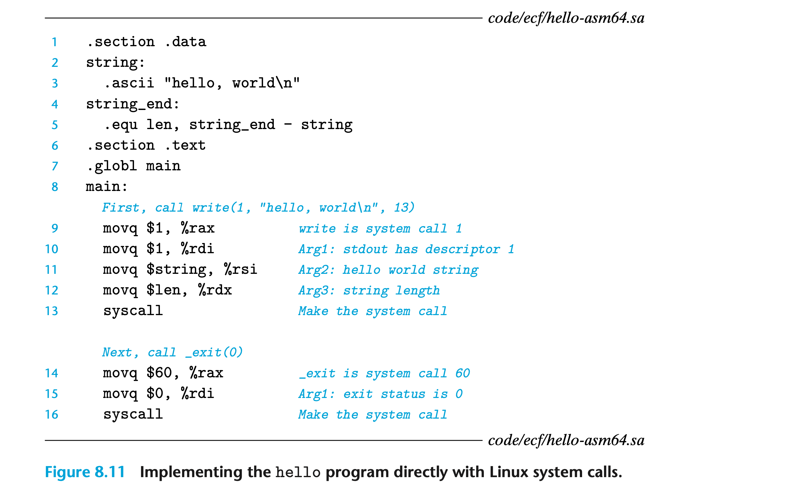
进程¶
进程是正在执行的程序的实例，系统中的每个程序都在进程的上下文中运行。上下文由程序正确运行所需的状态组成，包括存储在内存中的程序代码和数据、栈、通用寄存器中的内容、程序计数器、环境变量以及打开 文件描述符 。
进程为应用提供了两个关键抽象：
- 一个独立的逻辑控制流，让我们产生程序独占处理器的错觉；
- 一个私有的地址空间，让我们产生程序独占内存的错觉。
逻辑控制流¶
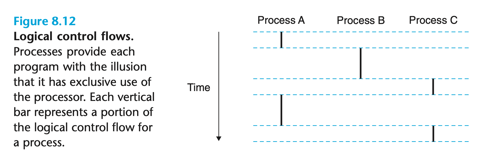
进程轮流使用处理器。每个进程执行其流程的一部分，然后在其他进程执行时被抢占（即暂时挂起）。
并发流¶
执行时间重叠的两个逻辑控制流被称为并发流（Concurrent Flow），它们并发运行。如上图 8.12 所示，进程 A 和 进程 B 并发运行，但进程 B 和进程 C 则不是。
并发流的概念与处理器的核数以及计算机的数量无关，只要两个逻辑控制流在时间上重叠，那么它们便是并发的。如果两个逻辑控制流在不同的处理器内核或计算机上同时运行，我们就称它们为并行流（Parallel Flow）。显然，并行流是并发流的子集。
私有地址空间¶
进程为程序提供了独享的私有地址空间，与空间内特定地址相关的内存字节通常不能被其他任何进程读取或写入。尽管私有地址空间的内容不同，但其具有相同的组织结构（图中的“%esp”应为“%rsp”）：
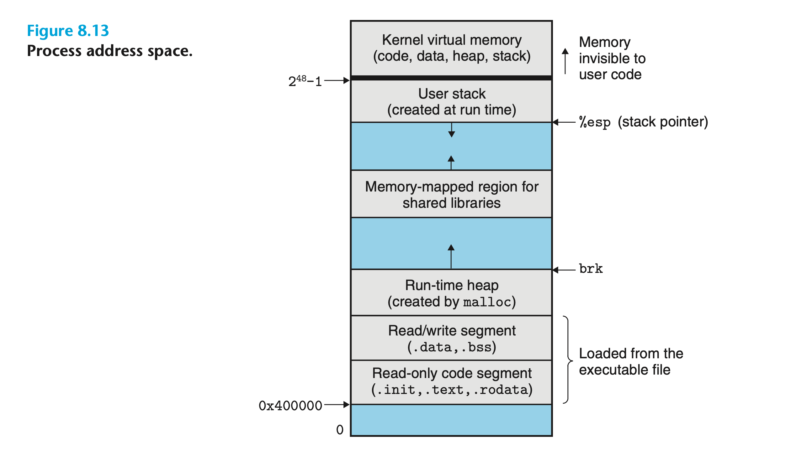
地址空间底部是为用户程序保留的，代码段总是从地址 0x400000 开始。地址空间顶部是为内核保留的，包含了内核为进程执行指令（如系统调用）时使用的代码、数据和栈。
用户态和内核态¶
处理器通过保存在控制寄存器中的模式位（Mode Bit）来识别进程当前享有的特权。当模式位被设置时，进程运行在内核态（Kernel Mode），反之则运行在用户态（User Mode）。在内核态中运行的程序可以执行指令集中的任意指令，并且能够访问系统中的任意位置。而在用户态中运行的程序则受到限制，只能使用系统调用间接地访问内核代码和数据。
应用程序的进程只能通过异常来从用户态切换到内核态。当异常发生且控制转移到异常处理程序时，处理器切换到内核态。随后异常处理程序在内核态中运行，处理器将在它返回时切换回用户态。
上下文切换¶
在进程执行期间，内核可以暂时挂起当前进程并重启先前被抢占的进程，这一行为被称为调度（Scheduling）。内核调度新进程是通过上下文切换（Context Switch）机制来实现的，该机制：
- 保存当前进程的上下文；
- 恢复之前被抢占进程的上下文；
- 将控制权转移给新进程。
程序执行系统调用时可能会发生上下文切换。比如系统调用read需要访问磁盘中的数据，内核可以通过上下文切换来调度另一个进程，这样就无需等待数据从磁盘加载到内存中。
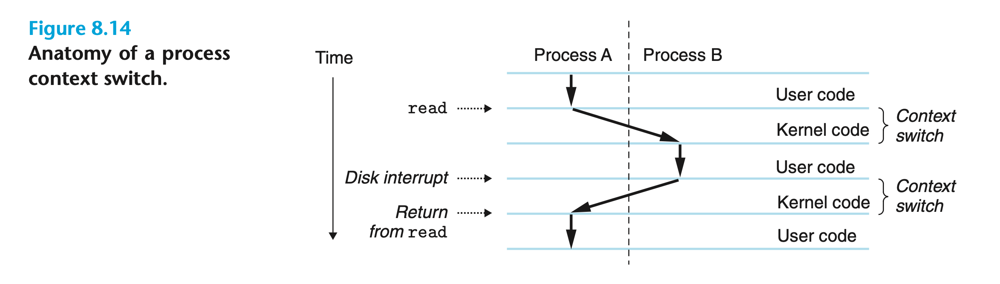
系统调用错误处理¶
当执行 Unix 系统级函数遇到错误时，它们会返回 -1 并设置全局整型变量errno的值。因此我们可以在程序中检查调用是否发生错误，如：
其中，strerror函数会根据errno的值返回相关的文本字符串。我们定义一个错误报告（Error-reporting）函数以简化上述代码：
当然还可以进一步地将代码简化为一个错误处理（Error-handling）函数：
这样我们便能够使用包装函数Fork代替fork及其错误检查代码。本书使用的包装函数均定义在 csapp.h 和 csapp.c 中。
进程控制¶
获取进程 ID¶
每个进程都有一个唯一且大于 0 的进程 ID（PID）。函数getpid返回调用进程的 PID，而函数getppid则返回创建调用进程的进程（即父进程） 的 PID。
二者返回值的类型均为pid_t，它在 Linux 系统的sys/types.h文件中被定义为int。
创建和终止进程¶
在程序员看来，进程有三种状态：
- 运行（Running）：该进程要么在 CPU 中执行，要么在等待内核调度；
- 停止（Stopped）：进程执行暂停，并且不会被调度；
- 终止（Terminated）：进程永久地停止。
函数exit会以参数status作为退出状态终止进程：
父进程可以调用fork函数来创建一个新的子进程：
子进程将获得一个与父进程相同但独立的用户级虚拟内存空间副本，包括代码、数据、堆、共享库和用户栈等。它还会得到与父进程相同的打开文件描述符副本，因此能够读写任意父进程打开的文件。父进程和子进程之间最显著的区别便是 PID 不同。
函数fork执行一次却返回两次：在父进程中返回子进程的 PID，在子进程中返回 0。由于子进程的 PID 始终大于 0 ，我们可以通过返回值判断程序在哪个进程中执行。
该程序编译后运行的可能结果为：
从结果我们可以看出：父进程和子进程并发执行，我们永远无法预测其执行顺序；子进程的地址空间是父进程的副本，因此当第六行的函数Fork返回时，两进程中的局部变量x均为 1；两进程对变量的更改互不影响，所以最终输出的值不同。
绘制进程图（Process Graph）对理解fork函数很有帮助，如：
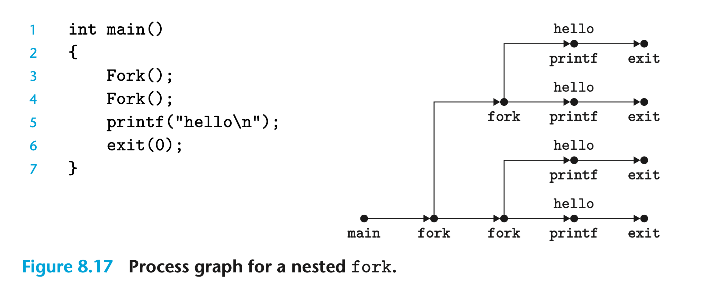
回收子进程¶
进程终止后，内核不会立即将其移除。它需要被其父进程回收（Reap），否则将成为僵尸（Zombie）进程。当父进程回收其终止的子进程时，内核将子进程的退出状态传递给父进程，然后再丢弃它。
如果父进程终止，内核会安排init进程（PID 为 1）“收养”孤儿进程；如果父进程在终止前没有回收僵尸子进程，那么则由init进程回收它们。
进程通过调用函数waitpid等待其子进程终止或停止：
默认情况下（参数options为 0 时），函数waitpid会暂停调用进程，直至其等待集（Wait Set）中的某个子进程终止。该函数始终返回第一个终止的子进程 PID。此时，终止的子进程已被回收，内核从系统中删除了它的所有痕迹。
若参数pid_t大于 0 ，则等待集中只有一个 PID 与该参数相等的子进程。若参数pid_t等于 -1，则等待集包含调用进程的所有子进程。
我们可以通过修改参数options的值来改变函数waitpid的行为：
WNOHANG：如果等待集中的子进程还未终止，则立即返回 0；WUNTRACED：暂停调用进程执行，直到等待集中的进程终止或停止（默认情况下仅返回终止的子进程 PID）；WCONTINUED：暂停调用进程执行，直到等待集中的进程终止或等待集中停止的进程收到 SIGCONT 信号恢复。
若参数statusp不为NULL，那么waitpid还会将返回的子进程状态信息编码到status中（*statusp = status）。wait.h文件定义了几个用于解释参数status的宏：
WIFEXITED(status)：如果子进程正常终止（比如调用exit或返回），则返回True；WEXITSTATUS(status)：如果WIFEXITED()返回True，则返回终止子进程的退出状态；WIFSIGNALED(status)：如果子进程由于未捕获的信号而终止，则返回True；WTERMSIG(status)：如果WIFSIGNALED()返回True，则返回导致子进程终止的信号编号；WIFSTOPPED(status)：如果返回的子进程当前已停止，则返回True；WSTOPSIG(status)：如果WIFSTOPPED()返回True，则返回导致子进程停止的信号编号；WIFCONTINUED(status)：如果子进程收到 SIGCONT 信号后恢复，则返回True。
如果调用进程没有子进程，waitpid将返回 -1 并将全局变量errno设为ECHILD；如果waitpid被信号中断，则返回 -1 并将全局变量errno设为EINTR。
函数wait是waitpid的简化版本，wait(&status)等效于waitpid(-1, &status, 0)。
如示例程序所示，父进程首先调用Fork创建了两个退出状态唯一的子进程（exit(100+i)）。 随后在 While 循环的测试条件中通过waitpid等待其所有的子进程终止，并打印子进程的退出状态。最终所有的子进程均被回收，waitpid返回 -1 且将全局变量errno设为ECHILD，函数执行完毕。
在 Linux 系统上运行该程序时，它会产生以下输出：
值得注意的是，父进程回收子进程的顺序是随机的。我们可以对上述程序进行一定 修改，从而使其按子进程的 PID 顺序输出。
让进程休眠¶
函数sleep可以让进程暂停执行一段时间：
如果请求的暂停时间已经过去，则函数返回 0；如果该进程被信号中断，则返回剩余的暂停时间。
函数pause会使调用进程进入休眠状态，直至收到信号。该函数始终返回 -1:
加载并运行程序¶
函数execve在当前进程的上下文中加载并运行一个新程序：
参数filename是加载并运行的可执行文件名称，argv和envp则分别是参数和环境变量列表。函数execve通常没有返回值，仅在出现错误时返回 -1。
变量argv指向一个以NULL为结尾的指针数组，其中的每个元素都指向一个参数字符串。一般来说，argv[0]是可执行目标文件名称；变量envp也指向一个以NULL结尾的指针数组，其中的每个元素均指向一个环境变量字符串，每个字符串都是一个name=value形式的键值对。两者的数据结构如下：
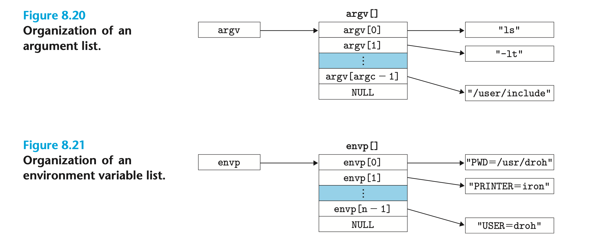
execve加载文件名后，会调用启动代码。 启动代码设置栈并将控制权传递给新程序的main函数，其原型为：
main函数执行时的用户栈结构如下图所示，从栈底到栈顶分别是：环境变量字符串、参数字符串、指向环境变量字符串的指针数组和指向参数字符串的指针数组。该函数的三个参数分别保存在不同的寄存器中：参数argc给出数组argv[]中的非空指针数量；参数argv指向数组argv[]中第一个元素；参数envp则指向数组envp[]中的第一个元素：
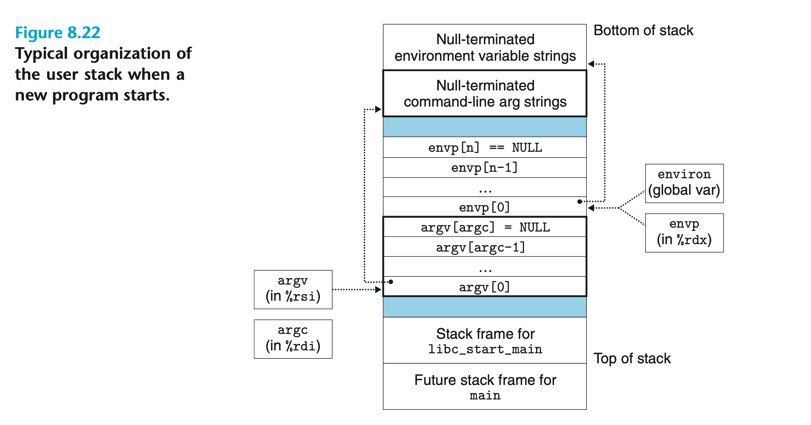 Linux 提供了几个用于操作环境变量数组的函数：
如果数组中包含以参数name为键的字符串，则函数getenv返回其对应的值，函数unsetenv删除该字符串，函数setenv将值替换为参数newvalue（overwrite非零时）；如果不存在以name为键的字符串，则函数setenv会将name=newvalue添加到数组中。
使用 fork 和 execve 运行程序¶
Unix shell 和 Web 服务器等程序大量使用了fork和execve函数。本书提供了一个简单的 shell 程序，其缺陷在于没有回收任何后台运行的子进程。我们需要使用下一节介绍的信号来解决这一问题。
信号¶
信号（Signal）是一种高级的异常控制流，它允许进程和内核将某些类型的系统事件通知给其他进程。Linux 支持的信号类型多达三十种：
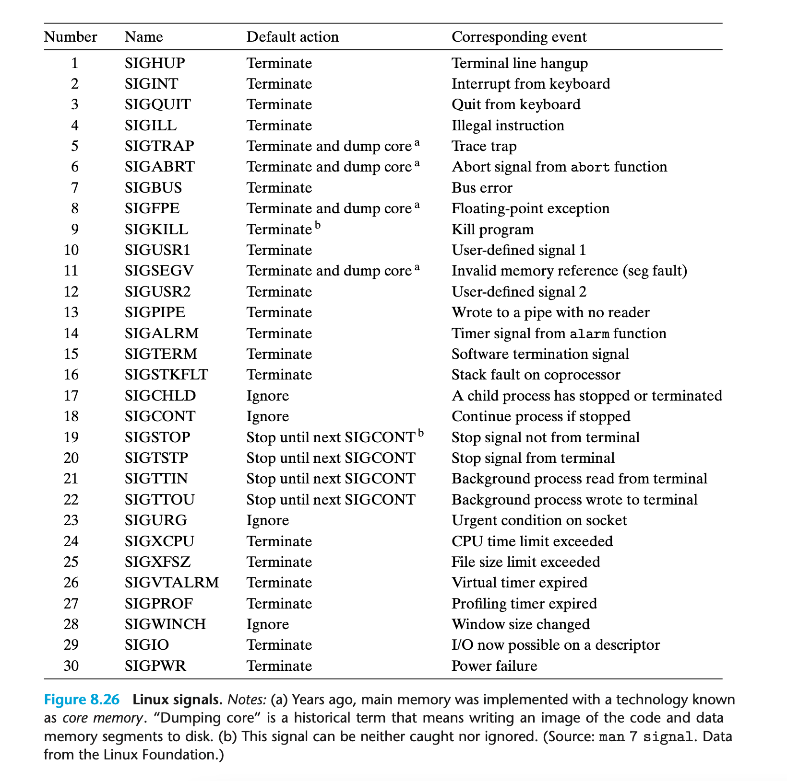 低级别的硬件异常由内核中的异常处理程序处理，通常不会对用户进程可见，而信号则可以将此类异常暴露给用户进程。如果一个进程试图除以 0，内核就会向它发送一个 SIGFPE（编号 8）信号。
信号术语¶
发送信号到目标进程需要完成两个步骤：
- 发送（传递）信号：内核通过更新目标进程上下文中的某些状态来向目标进程发送信号。发送信号的原因有两种：① 内核检测到系统事件的发生，如被 0 除错误或子进程终止等；② 进程调用了
kill函数（将在下一节介绍）。进程可以向自己发送信号； - 接收信号：当内核强制目标进程以某种方式对信号做出响应时，它便接收到了信号。该进程可以通过执行用户级别的信号处理程序（Signal Handler）来忽略、终止或捕获信号。
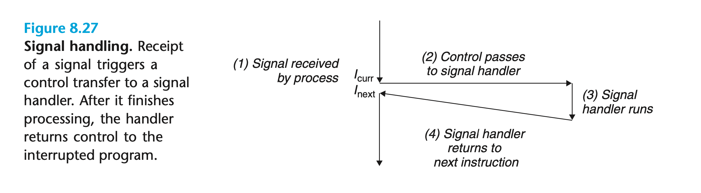 已发送但还未接收的信号被称为待处理信号（Pending Signal）。在任意时间点，相同类型的待处理信号最多只能有一个。这意味着如果一个进程已经有一个类型为 k 的待处理信号，那么后续所有发送给该进程的 k 类型信号都将被丢弃。进程还可以选择性地阻塞（Block）某些信号的接收。
发送信号¶
进程组¶
每个进程都属于一个进程组（Process Group），它由一个正整数的进程组 ID 所标识。getpgrp函数返回当前进程的进程组 ID：
默认情况下，子进程与其父进程属于同一个进程组。进程可以通过setpgid函数改变自己或另一个进程的进程组：
该函数会把进程pid的进程组更改为pgid。若将参数pid或pgid设为 0，则相当于使用调用进程的 PID 作为参数。举例来说，如果进程 15213 调用函数setpgid(0, 0)，那么将会创建一个进程组 ID 为 15213 的新进程组，并使该进程加入此组。
从键盘发送信号¶
Unix Shell 使用任务（Job）表示单个命令行（如ls | sort）创建的进程，同一时间内只能有一个前台任务和多个后台任务。
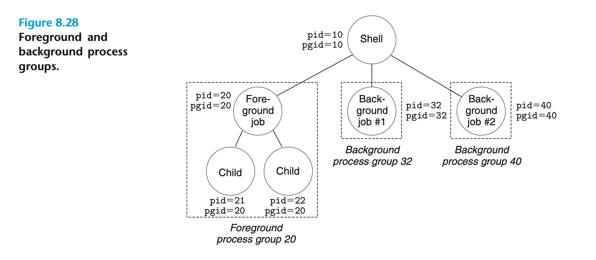 在键盘上输入 Ctrl+C 会使内核向前台进程组中的所有进程发送 SIGINT 信号，这将终止前台任务。同样，输入 Ctrl+Z 会使内核向前台进程组中的所有进程发送 SIGTSTP 信号，这将停止（挂起）前台任务。
使用 kill 函数发送信号¶
进程可以调用kill函数向其他进程（包括其自身）发送信号：
若参数pid大于 0，则该函数将编号为sig的信号发送给进程pid；若参数pid等于 0，则该函数将信号发送给调用进程所在进程组中的所有进程；如果参数pid小于 0，则该函数将信号发送给进程组 ID 为|pid|的进程组中的所有进程。
使用 alarm 函数发送信号¶
进程可以调用alarm函数向自己发送 SIGALRM 信号：
内核将在secs秒后向调用进程发送 SIGALRM 信号，取消所有之前设置的alarm，并返回其剩余的秒数。
接收信号¶
当内核将进程 p 从内核态切换到用户态时，它会检查 p 未阻塞且未处理（Pending & ~Blocked）的信号集。通常该集合为空，内核将控制权转移给 p 的逻辑控制流中的下一条指令。但如果该集合非空，内核就会选择信号集中的某个信号 k 并强制 p 接收它。信号将触发进程完成一些动作（Action），预定义的默认动作有：
- 进程终止；
- 进程终止并转储核心（Dump Core，即将代码和数据内存段的镜像写入磁盘）；
- 进程停止（暂停），直到接收 SIGCONT 信号重新启动；
- 进程忽略该信号。
每种信号的默认动作见（上图 8.26）。除 SIGSTOP 和 SIGKILL 信号外，进程还可以通过函数signal修改信号的默认动作：
若参数handler为SIG_IGN，则signum类型的信号将会被忽略；若参数handler为SIG_DFL，则signum类型的信号的动作将恢复为默认；若参数handler为用户定义的信号处理程序地址，则进程接收到signum类型的信号后会调用该程序，这种方法被称为安装处理程序（Installing Handler）。在这种情况下，调用处理程序被称为捕获信号（Catching Signal），执行处理程序被称为处理信号（Handling Signal）。
如果我们在示例程序运行时按下 Ctrl+C，该进程就不会直接终止而是输出一段信息后才终止：
信号处理程序还可以被其他处理程序中断（信号 \(s \ne t\)）：
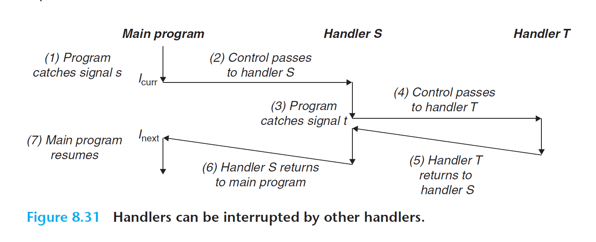
阻塞信号¶
Linux 为阻塞信号提供了显式和隐式的实现机制：
- 隐式：默认情况下，内核会阻塞任何与处理程序当前正在处理的信号类型相同的未处理信号。比如上图 8.31 中，若信号 \(t\) 的类型与 \(s\) 相同，则 \(t\) 将在处理程序 \(S\) 返回前持续挂起；
- 显式：应用程序可以调用
sigprocmask等函数阻塞信号或解除信号的阻塞。
sigprocmask函数可以改变当前阻塞信号的集合（设为blocked），具体行为取决于参数how的值：
SIG_BLOCK：将参数set中的信号阻塞（blocked = blocked | set）；SIG_UNBLOCK：为set中的信号解除阻塞（blocked = blocked & ~set）；SIG_SETMASK：将阻塞信号集合设为set（blocked = set）。
如果参数oldset非空，则先前blocked的值会存储在oldset中。
除此之外，函数sigemptyset将set初始化为空集；sigfillset将所有信号加入到set中；sigaddset将编号为signum的信号加入到set中；sigdelset将编号为signum的信号从set中删除；如果signum信号在set中，则函数sigismember返回 1，否则返回 0。
示例程序暂时阻塞了 SIGINT 信号的接收：
编写信号处理程序¶
安全的信号处理¶
如果处理程序和主程序并发地访问同一个全局数据结构，就会发生不可预知的严重问题。因此我们在编写信号处理程序时应当遵循以下守则：
- 使信号处理程序尽可能的简单；
- 仅调用异步信号安全（Async-Signal-Safe）的函数。这种函数一般只访问局部变量，或者不会被其他信号处理程序中断。值得注意的是，许多常用的函数，如
printf、sprintf、malloc和exit等并非异步信号安全。调用write函数是信号处理程序生成输出的唯一安全方法； - 保存并恢复变量
errno：许多 Linux 异步信号安全函数返回错误时会设置变量errno的值，因此可能会干扰程序中其他依赖errno的部分。当处理程序有返回时，我们应当在调用前将errno保存到局部变量中，并在返回前恢复其值； - 访问全局数据结构时阻塞所有信号；
- 假设主程序和信号处理程序共享全局变量
g，处理程序更新g的值，主程序定期读取g的值。优化的编译器会从寄存器中读取已缓存的g，因此主函数中的g可能永远不变，并且每次对g的引用也都是安全的。若使用volatile声明全局变量，如volatile int g;，那么当代码引用g时，编译器就会从内存中读取其值。在这种情况下，我们应当临时阻塞信号以保护对g的访问； - 在常见的设计中，处理程序通过写入全局标识（Flag）来记录信号的接收。若使用
sig_atomic_t类型声明标识，如volatile sig_atomic_t flag;，那么便可以保证flag写入的原子性（Atomic/Uninterruptible）。
正确的信号处理¶
上文提到，父进程必须回收子进程以避免在系统中留下僵尸进程，但我们也希望父进程可以在子进程运行时自由地执行其他任务。因此我们使用 SIGCHILD 处理程序来回收子进程，而不是显式地调用waitpid等待子进程终止：
示例程序中，父进程安装了处理程序handler1并创建三个子进程。它等待来自终端的输入，然后进入 While 循环。每当一个子进程终止时，内核将发送一个 SIGCHLD 信号通知父进程。父进程捕获信号后回收子进程，输出一段信息然后返回。
在 Linux 上运行该程序得到的输出结果为：
父进程创建了三个子进程，然而却只回收了两个，这是因为同一时间内相同类型的未处理信号最多只能有一个。信号处理程序在处理第一个信号时，第二个信号到达并被添加到未处理信号集中。由于已有一个未处理的 SIGCHLD 信号，此时若第三个信号到达便会被直接丢弃。当处理程序返回后，内核发现第二个信号还未处理，于是强制父进程接收该信号并重新执行处理程序。等到处理程序再次返回，父进程就不再有任何未处理的 SIGCHLD 信号了。
我们可以让处理程序在被调用时尽可能多地回收子进程以解决这一问题：
可移植的信号处理¶
不同的系统有着不同的信号处理语义，因此 Posix 标准定义了sigaction函数，它允许用户在安装信号处理程序时明确地指定他们想要的语义：
然而sigaction函数十分笨重，因此我们常使用它的包装函数Signal：
避免并发错误¶
上文提到，我们永远无法预测两个同步（并发）运行的函数的调用顺序。如果调用顺序会影响结果的正确性，那么这种错误就被称为竞争（Race）。我们可以通过阻塞相关信号来避免这一问题。
显式等待信号¶
有时候主程序需要显式等待某个信号处理程序运行完毕。例如 Linux Shell 创建前台任务后，必须等待任务终止并被 SIGCHLD 处理程序回收，然后才能接收下一条用户命令。示例程序展示了其基本思想：
父进程先为信号 SIGCHLD 和 SIGINT 安装处理程序，然后创建子进程并将全局变量pid设为 0，最后进入自旋循环（while (!pid)）。子进程终止后，pid变为非 0，于是父进程退出自旋循环。为了防止父进程进入自旋循环前接收到 SIGCHLD ，我们需要在创建子进程之前阻塞该信号。
这段代码是正确的，但自旋循环会浪费处理器资源。我们可以将其改为：
问题在于：如果父进程在 While 的条件测试之后而pause的执行之前接收到 SIGCHLD，那么程序就会永远休眠。我们还可以将pause改为sleep：
这样虽然避免了竞争问题，但会增加程序的运行时间。正确的解决方案是调用函数sigsuspend：
该函数使用参数mask替换当前的阻塞信号集合，然后暂停进程直至其接收信号。如果该信号的动作是终止进程，则进程终止且不从sigsuspend返回；如果该信号的动作是运行一个处理程序，则sigsuspend在处理程序返回后返回，并将阻塞信号集合的状态恢复。
实际上它等效于下列函数组合的原子性（Atomic，即不可中断）版本：
因此我们可以将示例函数修改为：
非本地跳转¶
C 提供了一种用户级别的异常控制流，即非本地跳转（Nonlocal Jump）。它无需完成正常的调用/返回序列，就可以将控制权从一个函数直接转移到另一个当前正在执行的函数。非本地跳转是通过setjmp和longjmp函数实现的：
setjmp函数将当前调用环境（Calling Environment，包括程序计数器、栈指针和通用寄存器等），保存在参数env指定的缓冲区中并返回 0。longjmp函数会从env缓冲区恢复调用环境，然后触发最近调用的setjmp函数的返回。这种情况下，setjmp会返回一个非零值retval。在信号处理程序中，我们使用sigsetjmp和siglongjmp代替它们。
非局部跳转的一个重要应用是可以在检测到某些错误条件时，从深度嵌套的函数调用中立即返回。我们使用非本地跳转直接返回到常见的错误处理程序，无需费力地展开栈（Unwind Stack）。
示例程序中主函数首先调用setjmp保存当前调用环境，然后依次调用函数foo和bar。 一旦函数执行发生错误，它们会立即通过longjmp从setjmp返回。setjmp的非零返回值表示错误的类型，因此我们可以在代码中的某处对其进行处理。
非局部跳转的另一个重要应用是从信号处理程序跳转到特定代码位置，而不是像往常那样返回到因信号中断的指令。